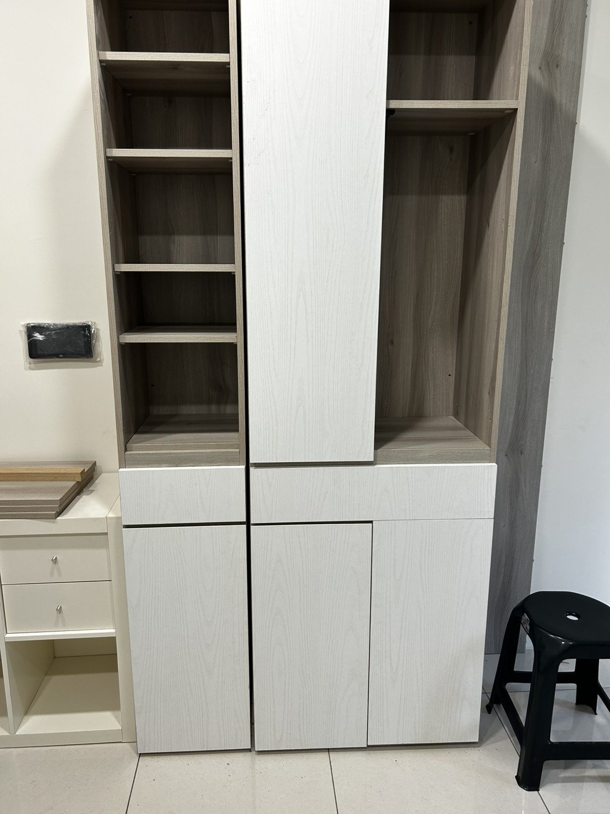

今天一大早搬家公司就來了。
要搬的東西事前都跟他們講好了——鞋櫃、書櫃、衣櫃、一張單人床，剩下就是一些零星的生活雜物。照片我也先傳過去，對方看了說沒問題，可以搬。就是因為這句「可以搬」，我才排了今天。
結果師傅一到現場，看了看那幾個系統櫃，才說這種櫃子不是他們的專長。當下有點傻眼——照片不是早就給了嗎？不過人都來了，他們也還是硬著頭皮開始拆。
問題就從這裡開始。系統櫃拆裝很吃經驗，門板、鉸鏈、層板的位置都有對應關係，裝回去差一點點，門就對不齊。拆到後來，裝出來的門一扇高一扇低，怎麼喬都喬不平。過程裡難免有些來回，說不上吵架，但那種「你當初不是說可以嗎」的悶，雙方大概都有。

弄到一個段落，我看門實在喬不平了，就跟他們說算了，維持現況吧，別再拆了。再弄下去櫃子只會更傷。至於那個衣櫃，因為體積太大，最後也沒請他們搬。
坐下來想，這件事兩邊都有可以更好的地方，但廠商這端我覺得比較關鍵的是兩點。
第一，做不到的事，一開始就不要答應。照片都看過了還說可以搬，等於把「要不要今天搬」這個決定建立在一個不準的承諾上。
第二，接單的時候應該主動再確認一次：這裡面有系統櫃，你們的報價和服務有沒有含系統櫃的拆裝？一句話的事，就能省掉現場所有的尷尬。
當然我自己也學到了。下次找搬家，我不會只丟照片就算數，會白紙黑字把「含系統櫃拆裝」這種關鍵項目寫進去、再口頭確認一遍。有些話覺得對方應該懂，其實不講清楚就是不算數。
累了一天，櫃子歪歸歪，東西總算是進來了。剩下的慢慢喬。